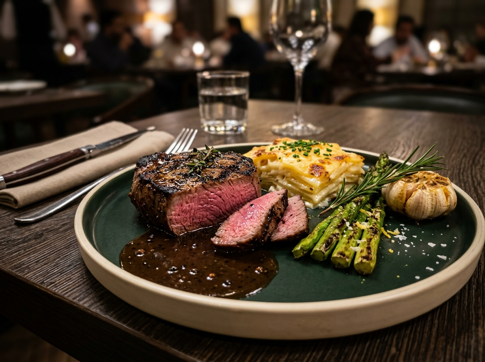
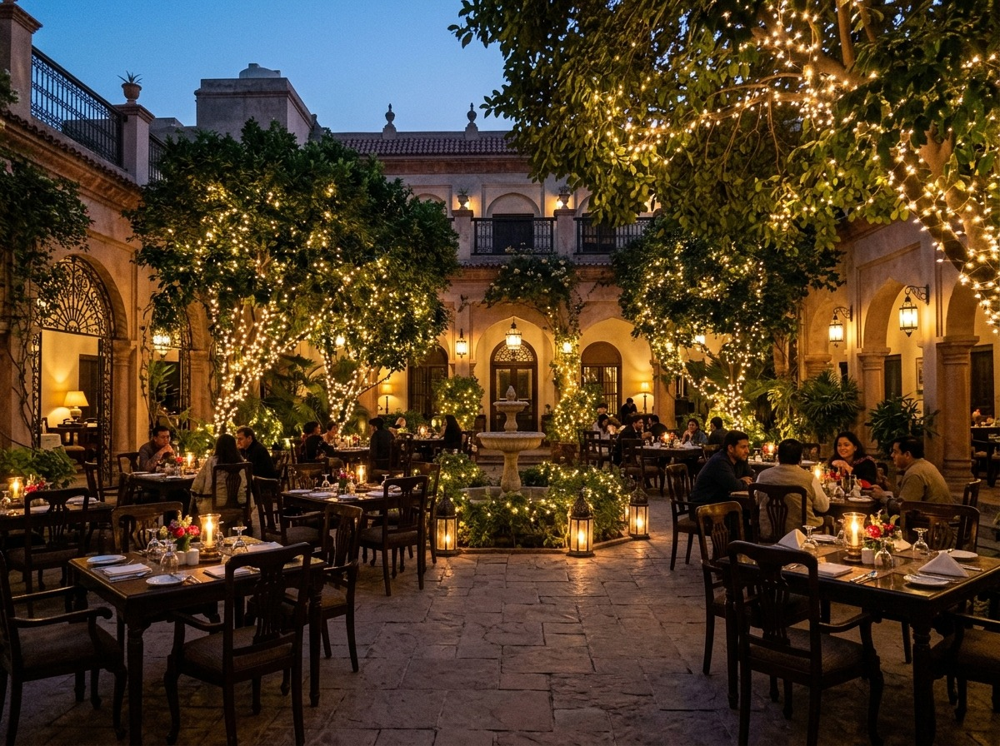
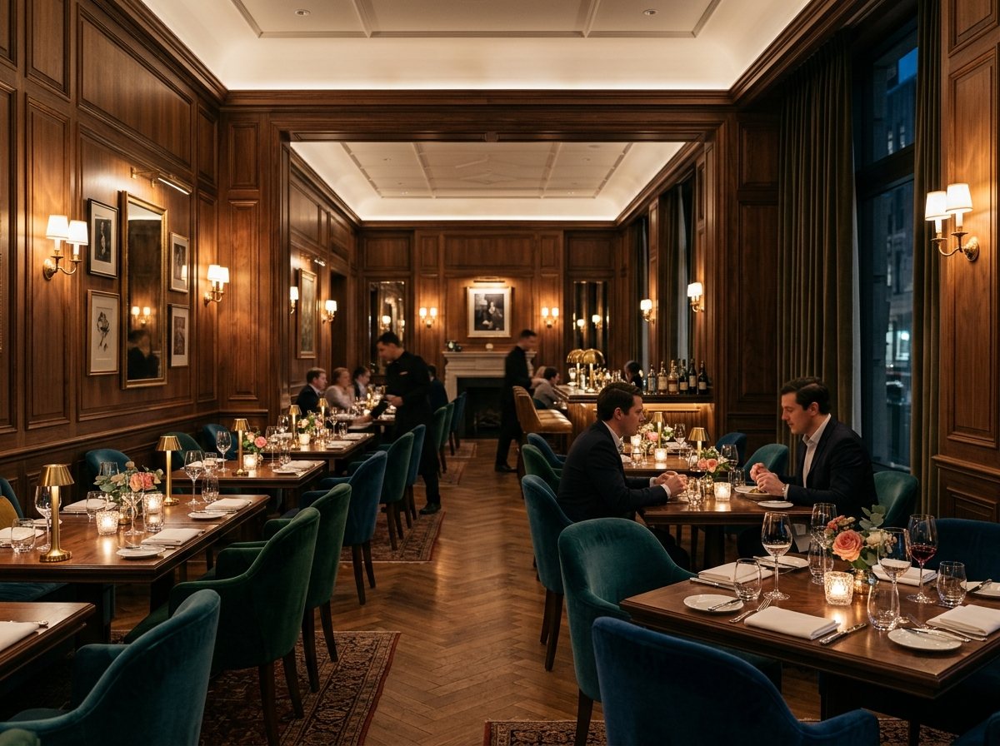
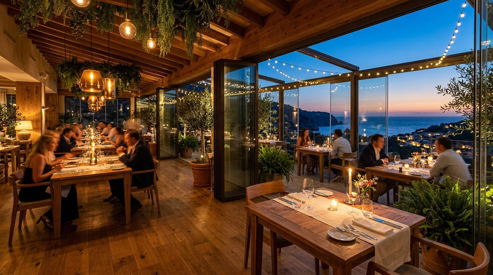

01The King's Cut Beef Steak
Prime aged beef tenderloin charbroiled over open flames, basted with roasted garlic-herb butter, with potato gratin, asparagus and cracked black pepper demi-glace.
MAIN GULBERG · LAHORE
An inviting café experience for long conversations, relaxed meals and little moments worth remembering.
 Since every meal
Since every mealWELCOME TO TENERIFE
From an easy coffee to a full evening around the table, Tenerife Café is designed around the simple pleasure of eating well and spending time together.
11 Jail Rd, Main Gulberg, Lahore, Pakistan
Get directions ↗THE TENERIFE FEEL
MORE THAN A MEAL
From fairy-lit dinners to celebrations and private gatherings, Tenerife Café offers several ways to make your visit special.

Secluded open-air dining surrounded by mature trees, warm fairy lights and lush botanical greenery.

A cozy, smoke-free indoor dining space with warm walnut panelling, low ambient lighting and acoustic comfort.

A panoramic glass-walled setting overlooking the Jail Road tree canopy, ideal for parties and gatherings.
Advance table booking with seating preferences · Direct phone booking · Instant WhatsApp booking
Birthday & anniversary setups · Private dining & group banquets · Custom cake presentation
Complimentary valet parking · Dine-in, takeaway & curbside pickup · High-speed guest Wi-Fi
7 days a week · 12:30 PM–1:00 AM · Kitchen last orders at 12:30 AM
PLAN YOUR VISIT
11 Jail Rd, Main Gulberg
Lahore, Pakistan